Table of Contents
3. Introducing Supply and Demand
3.1. Demand
3.1.1. The Law of Demand
3.1.2. Demand Schedules and Demand Curves
3.1.3. Market Demand
3.1.4. Ceteris Paribus
3.1.5. Changes in Demand and Shifts in the Demand Curve
3.2. Supply
3.2.1. The Law of Supply
3.2.2. Supply Schedules and Supply Curves
3.2.3. Market Supply
3.2.4. Determinants of Supply
3.2.5. Changes in Supply and Shifts in the Supply Curve
3.3. Market Equilibrium
3.3.1. Clearing the Market at Equilibrium Price and Quantity
3.3.2. Impacts of Surpluses and Shortages on Market Equilibrium
3.3.3. Changes in Demand and Supply and Impacts on Equilibrium
3.4. Government Intervention and Disequilibrium
3.4.1. Why Governments Intervene In Markets
3.4.2. Price Ceilings
3.4.3. Price Ceiling Impact on Market Outcome
3.4.4. Price Floors
3.4.5. Price Floor Impact on Market Outcome
3.4.6. Introduction to Deadweight Loss
3.4.7. Arguments for and Against Government Price Controls
3.4.8. Taxes
3.4.9. Taxation Impact on Economic Output
3. Introducing Supply and Demand
3.1. Demand
3.1.1. The Law of Demand
In general, the law of demand states that the quantity demanded and the price of a good or service is inversely related, other things remaining constant.
Learning Objective
Explain the concept of demand and discuss the factors that affect it
Key Points
- The demand curve is downward sloping, indicating the negative relationship between the price of a product and the quantity demanded.
- For normal goods, a change in price will be reflected as a move along the demand curve while a non-price change will result in a shift of the demand curve.
- Two exceptions to the law of demand are Giffen goods and Veblen goods.
Key Terms
- Giffen good
- A good which people consume more of as only the price rises; Having a positive price elasticity of demand.
- Veblen good
- A good for which people's preference for buying them increases as a direct function of their price, as greater price confers greater status.
- normal good
- A good for which demand increases when income increases and falls when income decreases but price remains constant.
In economics, the law of demand states that the quantity demanded and the price of a good or service is inversely related, other things remaining constant. Therefore, the demand curve will generally be downward sloping, indicating the negative relationship between the price of a good or service and the quantity demanded.
Movement along the demand curve
If the income of the consumer, prices of the related goods, and preferences of the consumer remain unchanged, then the change in quantity of good demanded by the consumer will be negatively correlated to the change in the price of the good or service. The change in price will be reflected as a move along the demand curve.
Shift in the demand curve
The demand curve will shift, move either inward or outward as a result of non-price factors. A shift in demand can be related to the following factors (non-exhaustive list):
- Consumer preferences
- Consumer income
- Change in the price of related goods (i.e. compliments)
- Change in the number of buyers
- Consumer expectations

A demand curve, shown in red and shifting to the right, demonstrating the inverse relationship between price and quantity demanded (the curve slopes downwards from left to right; higher prices reduce the quantity demanded).
Though in general terms and specific to normal goods, demand will exhibit a downward slope, there are exceptions: Giffen goods and Veblen goods
Giffen goods
A Giffen good describes an extreme case for an inferior good. In theory, a Giffen good would display the characteristic that as price increases, demand for the product increases. In the real world application, there has not been a
true
example of a Giffen good, though a popular albeit historically inaccurate example is the purchase of potatoes (an inferior good) as prices continued to increase during the Irish potato famine.
Veblen goods
Some expensive commodities like diamonds, expensive cars, designer clothing and other high-price limited items, are used as status symbols to display wealth. The more expensive these commodities become, the higher their value as a status symbol and the greater the demand for them. The amount demanded of these commodities increase with an increase in their price and decrease with a decrease in their price. These goods are known as a Veblen goods.
3.1.2. Demand Schedules and Demand Curves
A demand curve depicts the price and quantity combinations listed in a demand schedule.
Learning Objective
Describe the relationship between demand curves and demand schedules
Key Points
- Demand curves are a graphical representation of a demand schedule, which is the table view of an economic agents' price to quantity relationship.
- Demand curves embody preferences, substitution potential and income, as well as other characteristics that influence an economic agent's ability to assess willingness to pay at a specific point in time for goods and services.
- Demand curves may be linear or curved.
- Aggregate demand is the sum of the quantity demanded for a specific price over a group of economic agents.
Key Term
- equilibrium
- The condition of a system in which competing influences are balanced, resulting in no net change.
The demand curve is a graphical representation depicting the relationship between a commodity's different price levels and quantities which consumers are willing to buy. The curve can be derived from a demand schedule, which is essentially a table view of the price and quantity pairings that comprise the demand curve.
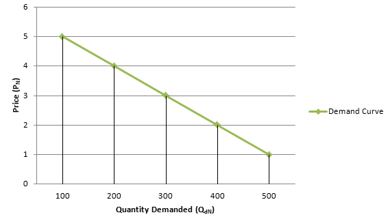{kind=link}
The demand curve is the graphical representation of the economic entity's willingness to pay for a good or service. It is derived from a demand schedule, which is the table view of the price and quantity pairs that comprise the demand curve.
Given that in most cases, as the price of a good increases, agents will likely decrease consumption and substitute away to another good or service, the demand curve embodies a negative price to quantity relationship. The curve typically slopes downward from left to right; though there are some goods and services that exhibit an upward sloping demand, these goods and services are characterized as abnormal .
The demand curve of an individual agent can be combined with that of other economic agents to depict a market or aggregate demand curve. Using a demand schedule, the quantity demanded per each individual can be summed by price, resulting in an aggregate demand schedule that provides the total demanded specific to a given price level. The plotting of the aggregated quantity to price pairings is what is referred to as an aggregate demand curve. In this manner, the demand curve for all consumers together follows from the demand curve of every individual consumer.
The demand curve in combination with the supply curve provides the market clearing or equilibrium price and quantity relationship. This is found at the intersection or point at which the supply and demand curves cross each other.
3.1.3. Market Demand
Market demand is the summation of the individual quantities that consumers are willing to purchase at a given price.
Learning Objective
Examine the relationship between market demand and individual demand
Key Points
- The graphical representation of a market demand schedule is called the market demand curve.
- Following the law of demand, the demand curve is almost always represented as downward-sloping. This means that as price decreases, consumers will buy more of the good.
- Two different hypothetical types of goods with upward-sloping demand curves are Giffen goods and Veblen goods.
Key Term
- Market demand
- The summation of the individual quantities that consumers are willing to purchase at a given price.
The demand schedule represents the amount of some good that a buyer is willing and able to purchase at various prices. The relationship between price and quantity demanded reflected in this schedule assumes the following factors remain constant:
- Income levels;
- Population;Tastes and preferences;
- Price of substitute goods; and
- Price of complementary goods
The demand schedule is depicted graphically as the demand curve. The demand curve is shaped by the law of demand. In general, this means that the demand curve is downward-sloping, which means that as the price of a good decreases, consumers will buy more of that good.
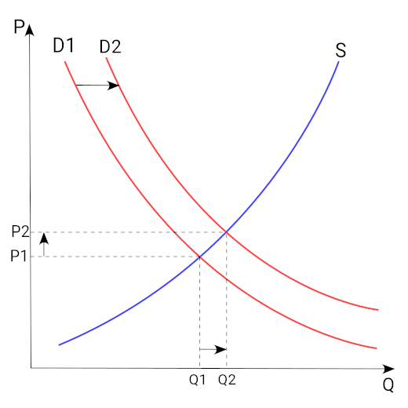{kind=link}
The demand curve is the graphical depiction of the demand schedule. For most goods and services, the demand curve exhibits a negative relationship between price and quantity and is as a result downward sloping.
A market demand schedule is a table that lists the quantity of a good all consumers in a market will buy at every different price. A market demand schedule for a product indicates that there is an inverse relationship between price and quantity demanded. The graphical representation of a market demand schedule is called the market demand curve.
A market demand schedule is a table that lists the quantity of a good all consumers in a market will buy at every different price.
The determinants of demand are:
- Income
- Tastes and preferences
- Prices of related (AKA complimentary) goods and services
- Prices of substitues
- Number of potential consumers
The market demand is the summation of the individual quantities that consumers are willing to purchase at a given price.
As noted, both individual demand curves and market demand are typically expressed as downward shaping curves. However, special cases exist where the preference for the good or service may be perverse. Two different hypothetical types of goods with upward-sloping demand curves are Giffen goods (an inferior but staple good) and Veblen goods (goods characterized as being more desirable the higher the price; luxury or status items).
3.1.4. Ceteris Paribus
Ceteris paribus is defined as "all else being equal," or "holding all else constant".
Learning Objective
Explain the rationale for the assumption of ceteris paribus
Key Points
- When ceteris paribus is employed in economics, all other variables with the exception of the variables under evaluation are held constant.
- An example of the use of ceteris paribus in macroeconomics is: what would happen to the demand for labor by firms if a minimum wage was imposed at a level above the prevailing wage rate, ceteris paribus.
- An example of the use of ceteris paribus in microeconomics is: what would happen for the demand for a normal good when income increases, ceteris paribus.
Key Term
- ceteris paribus
- all else equal; holding everything else constant
Economics seeks to interpret, analyze and or evaluate situations that occur between individuals, firms and other entities. Due to the potential for multiple agents and other known and unknown external activities to be involved or present but not relevant to an analysis, economics employs the assumption of "all else constant," which is the English translation of the Latin phrase "ceteris paribus".
When the ceteris paribus assumption is employed in economics, all other variables - with the exception of the variables under evaluation - are held constant.
A Macroeconomic Example
What would happen to the demand for labor by firms if a minimum wage was imposed at a level above the prevailing wage rate, ceteris paribus? As depicted in below, the supply and demand curve are held constant, as are labor and leisure preferences for workers, and output considerations for firms, in addition to all other variables and characteristics embedded within the shape of the supply and demand curves. Thus, what is being evaluated is the impact of a constraint on market equilibrium.

E is the equilibrium wage level when there is no binding minimum wage. When a minimum wage is imposed, ceteris paribus, suppliers of labor are willing to provide more labor than firms (demand for labor) are willing to purchase at the binding minimum wage rate. There is no shifting of either curve related to behavior influenced by the higher wage rate because ceteris paribus is holding labor-leisure trade-off (of workers) and substitution of labor (by firms) constant, along with other potential influencing variables.
A Microeconomic Example
What would happen for the demand for a normal good when income increases, ceteris paribus? In this case, as depicted in , a consumer's preferences for the good and his demand for complements and substitutes are being held constant along with other attributes that could potentially impact his demand for a good, such as the good's price. The supply of the good and the market and firm characteristics implicit in the shape of the supply curve are also held constant. This allows for an analysis of the increase in income, on the consumer's demand for the single good alone.

A consumer is able to purchase a normal good and has a demand curve, D1, which provides the relationship between price and quantity given his preferences, income and other consumption attributes. Assuming an increase in his income, ceteris paribus, his demand curve would shift outward to D2, corresponding to a higher quantity for each purchase price. The consumer would then move his consumption for the good from Q1 to Q2, increasing his purchase of the good.
3.1.5. Changes in Demand and Shifts in the Demand Curve
Demand is the relationship between the willingness to purchase a quantity of a good or service at a specific price.
Learning Objective
Distinguish between shifts in the demand curve and movement along the demand curve
Key Points
- A change in price will result in a movement along a demand curve.
- A change in a non-price variable will result in a shift in the demand curve.
- An outward shift in demand will occur if income increases, in the case of a normal good; however, for an inferior good, the demand curve will shift inward noting that the consumer only purchases the good as a result of an income constraint on the purchase of a preferred good.
Key Terms
- normal good
- A good for which demand increases when income increases and falls when income decreases but price remains constant.
- inferior good
- a good that decreases in demand when consumer income rises; having a negative income elasticity of demand.
The demand curve is a graphical representation of an economic agent's willingness to purchase a given quantity of a good or service at a specific price based on preferences, income, and other prevailing factors at a given point in time. Demand curves in combination with supply curves, which depict the price to quantity relationship of producers, are a representation of the goods and services market. Where the two curves intersect is market equilibrium, the price to quantity relationship where demand and supply are equal.
Movements in demand are specific to either movements along a given demand curve or shifts of the entire demand curve.
Movements along the demand curve are due to a change in the price of a good, holding constant other variables, such as the price of a substitute. If the price of a good or service changes the consumer will adjust the quantity demanded based on the preferences, income and prices of other factors embedded within a given curve for the time period under consideration.
Shifts in the demand curve are related to non-price events that include income, preferences and the price of substitutes and complements. An increase in income will cause an outward shift in demand (to the right) if the good or service assessed is a normal good or a good that is desirable and is therefore positively correlated with income. Alternatively, an increase in income could result in an inward shift of demand (to the left) if the good or service assessed is an inferior good or a good that is not desirable but is acceptable when the consumer is constrained by income .

A demand curve provides an economic agent's price to quantity relationship related to a specific good or service. Movements along a demand curve are related to a change in price, resulting in a change in quantity; shifts is demand (D1 to D2) are specific to changes in income, preferences, availability of substitutes and other factors.
A change in preferences could result in an increase (outward shift) or decrease (inward shift) in the quantity level desired for a specific price; while a change in the price of a substitute, could result in an outward shift if the price of the substitute increases and an inward shift if the substitute's price decreases. The demand curve for a good will shift in parallel with a shift in the demand for a complement.
3.2. Supply
3.2.1. The Law of Supply
The law of supply states that there is a positive relationship between the quantity that suppliers are willing to sell and the price level.
Learning Objective
Explain the Law of Supply
Key Points
- Quantity supplied moves in the same direction as price.
- The supply curve is an upward sloping curve.
- Producers are willing to increase production at higher prices to increase profit.
Key Terms
- surplus
- That which remains when use or need is satisfied, or when a limit is reached; excess; overplus.
- shortage
- a lack or deficiency
- equilibrium
- The condition of a system in which competing influences are balanced, resulting in no net change.
The law of supply is a fundamental principle of economic theory. It states that an increase in price will result in an increase in the quantity supplied, all else held constant.
An upward sloping supply curve, which is also the standard depiction of the supply curve, is the graphical representation of the law of supply. As the price of a good or service increases, the quantity that suppliers are willing to produce increases and this relationship is captured as a movement along the supply curve to a higher price and quantity combination.

Supply has a positive correlation with price. As the market price of a good increases, suppliers of the good will typically seek to increase the quantity supplied to the market.
The rationale for the positive correlation between price and quantity supplied is based on the potential increase in profitability that occurs with an increase in price.
All else held constant, including the costs of production inputs, the supplier will be able to increase his return per unit of a good or service as the price for the item increases. Therefore, the net return to the supplier increases as the spread or difference between the price and the cost of the good or service being sold increases.
The law of supply in conjunction with the law of demand forms the basis for market conditions resulting in a price and quantity relationship at which both the price to quantity relationship of suppliers and demanders (consumers) are equal. This is also referred to as the equilibrium price and quantity and is depicted graphically at the point at which the demand and supply curve intersect or cross one another. It is the point where there is no surplus or shortage in the market .
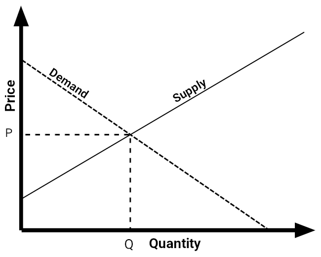{kind=link}
The law of supply and the law of demand form the foundation for the establishment of an equilibrium--where the price to quantity combination for both suppliers and demanders are the same.
3.2.2. Supply Schedules and Supply Curves
A supply schedule is a tabular depiction of the relationship between price and quantity supplied, represented graphically as a supply curve.
Learning Objective
Explain the price to quantity relationship exhibited in the supply curve
Key Points
- The supply curve plots the quantity that is willingly supplied at any given price.
- The individual supply curves can be summed by quantity provided at a specific price to achieve an aggregate supply curve.
- The supply curve is upward sloping in the short run.
Key Terms
- aggregate
- A mass, assemblage, or sum of particulars; something consisting of elements but considered as a whole.
- equilibrium
- The condition of a system in which competing influences are balanced, resulting in no net change.
Supply is the amount of some product that producers are willing and able to sell at a given price, all other factors being held constant. In general, supply depicts a positive relationship between the price of a good or service and the quantity that the producer is willing to supply: if a supplier believes it can sell the product for more, it will want to make more of the product. As a result, as the price of a good or service increases, suppliers increase the quantity available for purchase.
A supply schedule is a table that shows the relationship between the price of a good and the quantity supplied. The supply curve is a graphical depiction of the supply schedule that illustrates that relationship between the price of a good and the quantity supplied .
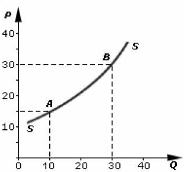{kind=link}
The supply curve is a graphical depiction of the price to quantity pairings presented in a supply schedule. The supply schedule is a table view of the relationship between the price suppliers are willing to sell a specific quantity of a good or service.
The supply curves of individual suppliers can be summed to determine aggregate supply. One can use the supply schedule to do this: for a given price, find the corresponding quantity supplied for each individual supply schedule and then sum these quantities to provide a group or aggregate supply. Plotting the summation of individual quantities per each price will produce an aggregate supply curve.
In theory, in the long run the aggregate supply curve will not be upward sloping but will instead be vertical, consistent with a fixed supply level. This is due to the underlying assumption that in the long run, supply of a good only depends on the fixed level of capital, technology, and natural resources available.
The supply curve provides one side of the price-to-quantity relationship that ensures a functional market. The other component is demand. When the supply and demand curves are graphed together they will intersect at a point that represents the market equilibrium - the point where supply equals demand and the market clears.
3.2.3. Market Supply
Market supply is the summation of the individual supply curves within a specific market where the market is characterized as being perfectly competitive.
Learning Objective
Identify the market conditions that yield a market supply curve.
Key Points
- A supply curve is the graphical representation of the supplier's positive correlation between the price and quantity of a good or service.
- The supply curve can only be attributed to a depiction of a perfectly competitive market due to the unique attributes of perfect competition: firms are price takers, no single firm's actions can influence the market price, and ease of exit and entry.
- The market supply curve is derived by summing the quantity for a given price across all market participants (suppliers). It depicts the price-to-quantity combinations available to consumers of the good or service.
Key Term
- Supply curve
- A graphical representation of the quantity producers are willing to make when the product can be sold at a given price.
A supply curve is the graphical representation of the supplier's positive correlation between the price and quantity of a good or service. As a result, the supply curve is upward sloping . Market supply is the summation of the individual supply curves within a specific market.

The market supply curve is an upward sloping curve depicting the positive relationship between price and quantity supplied.
The market supply curve is derived by summing the quantity suppliers are willing to produce when the product can be sold for a given price. As a result, it depicts the price to quantity combinations available to consumers of the good or service. In combination with market demand, the market supply curve is requisite for determining the market equilibrium price and quantity.
By its very nature, conceptualizing a supply curve requires the firm to be a perfect competitor, namely requires the firm to have no influence over the market price. This is true because each point on the supply curve is the answer to the question "If this firm is faced with this potential price, how much output will it be able to and willing to sell? " If a firm has market power, its decision of how much output to provide to the market influences the market price, then the firm is not "faced with" any price, and the question is meaningless.
The attributes of a competitive market signal that the price is set external to any firm. Therefore, production in the market is a sliding scale dependent on price. As price increases, quantity increases due to low barriers to entry, and as the price falls, quantity decreases as some firms may even opt out of the market.
The supply curve can be derived by compiling the price-to-quantity relationship of a seller. A seller could set the price of a good or service equal to zero and then incrementally increase the price; at each price he could calculate the hypothetical quantity he would be willing to supply. Following this process the seller would be able to trace out its complete individual supply function. The market supply curve is simply the sum of every seller's individual supply curve.
3.2.4. Determinants of Supply
Supply levels are determined by price, which increases or decreases supply along the price curve, and non-price factors, which shifts the entire curve.
Learning Objective
Identify the factors that affect the supply of a good
Key Points
- Supply is the quantity of a good or service that a supplier provides to the market.
- Suppliers will shift production for non-price changes related to the determinants of supply and will slide production levels across the supply curve for price related movements.
- Innumerable factors and circumstances could affect a seller's willingness or ability to produce and sell a good.
Key Terms
- incentive
- Something that motivates, rouses, or encourages.
- intervention
- The action of interfering in some course of events.
Supply is the quantity of a good or service that a supplier provides to the market. Innumerable factors and circumstances could affect a seller's willingness or ability to produce and sell a good. Some of the more common factors are:
- Good's own price: An increase in price will induce an increase in the quantity supplied.
- Prices of related goods: For purposes of supply analysis, related goods refer to goods from which inputs are derived to be used in the production of the primary good.
- Conditions of production: The most significant factor here is the state of technology. If there is a technological advancement related to the production of the good, the supply increases.
- Expectations: Sellers' expectations concerning future market conditions can directly affect supply.
- Price of inputs: If the price of inputs increases the supply curve will shift left as sellers are less willing or able to sell goods at any given price. Inputs include land, labor, energy and raw materials.
- Number of suppliers: As more firms enter the industry the market supply curve will shift out driving down prices. The market supply curve is the horizontal summation of the individual supply curves.
- Government policies and regulations: Government intervention can take many forms including environmental and health regulations, hour and wage laws, taxes, electrical and natural gas rates and zoning and land use regulations. These regulations can affect a good's supply.
Suppliers will change their production levels along the supply curve in response to a price change, so that their production level is equal to demand. However, some factors unrelated to price can shift the production level. For example, a technological improvement that reduces the input cost of a product will shift the supply curve outward, allowing suppliers to provide a greater supply at the same price level.
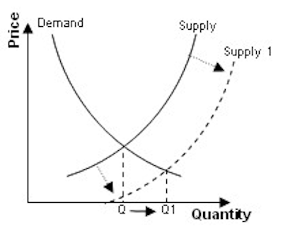{kind=link}
If the price of a good changes, there will be movement along the supply curve. However, the supply curve itself may shift outward or inward in response to non-price related factors that affect the supply of a good, such as technological advances or increased cost of materials.
3.2.5. Changes in Supply and Shifts in the Supply Curve
The supply curve depicts the supplier's positive relationship between price and quantity.
Learning Objective
Distinguish between shifts in the supply curve and movement along the supply curve
Key Points
- A change in the price of a good or service, holding all else constant, will result in a movement along the supply curve.
- A change in the cost of an input will impact the cost of producing a good and will result in a shift in supply; supply will shift outward if costs decrease and will shift inward if they increase.
- A change in the expected demand for a good or service will result in a shift in supply; supply will shift outward if enthusiasm is expected to increase and will shift inward if there is an expectation for consumers preferences to change in favor of an alternate good or service.
Key Term
- Non-price changes
- Shocks, either exogenous or endogenous, that affect the positioning of the supply curve.
Price changes and movement along supply curve
If the price of the good or service changes, all else held constant such as price of substitutes, the supplier will adjust the quantity supplied to the level that is consistent with its willingness to accept the prevailing price. The change in price will result in a movement along the supply curve, called a change in quantity supplied, but not a shift in the supply curve. Changes in supply are due to non-price changes.
Non-price changes and shifts of the supply curve
If production costs increase, the supplier will face increasing costs for each quantity level. Holding all else the same, the supply curve would shift inward (to the left), reflecting the increased cost of production. The supplier will supply less at each quantity level.
If production costs declined, the opposite would be true. Lower costs would result in an increase in output, shifting the supply curve outward (to the right) and the supplier will be willing sell a larger quantity at each price level. The supply curve will shift in relation to technological improvements and expectations of market behavior in very much the same way described for production costs.
Technological improvements that result in an increase in production for a set amount of inputs would result in an outward shift in supply.
Supply will shift outward in response to indications of heightened consumer enthusiasm or preference and will respond by shifting inward if there is an assessment of a negative impact to production costs or demand .
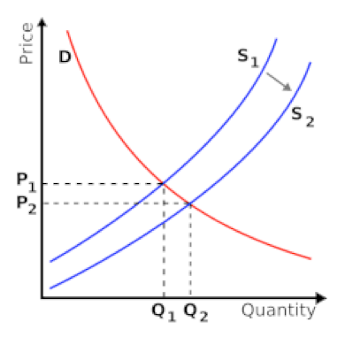{kind=link}
A shift in supply from S1 to S2 affects the equilibrium point, and could be caused by shocks such as changes in consumer preferences or technological improvements.
3.3. Market Equilibrium
3.3.1. Clearing the Market at Equilibrium Price and Quantity
When a market achieves perfect equilibrium there is no excess supply or demand, which theoretically results in a market clearing.
Learning Objective
Define market equilibrium
Key Points
- The interdependent relationship between supply and demand in the field of economics is inherently designed to identify the ideal price and quantity of a given product or service in a marketplace.
- A market clearing, by definition, is the economic assumption that the quantity supplied will consistently align with the quantity demanded.
- Market clearing requires a variety of assumptions which simplify the complexities of real markets to coincide with a more theoretical framework, most centrally the assumptions of perfect competition and Say's Law.
- While this concept of market clearing resonates well in theory, the actual execution of markets is very rarely perfect. The concepts of consolidated markets and 'sticky' markets reduces the accuracy of these models.
Key Terms
- Say's Law
- The idea that money is perishable.
- Incumbents
- A holder of a position as supplier to a market or market segment that allows the holder to earn above-normal profits.
- Opportunity cost
- The cost of an opportunity forgone (and the loss of the benefits that could be received from that opportunity); the most valuable forgone alternative.
Example
- A textbook example of a monopoly was the Da Beers family, who owned the vast majority of diamond mines worldwide. Through effectively controlling the diamond market supply (via owning the mines), and warehousing the diamonds in a way to substantially alter the available supply, it became reasonably easy for Da Beers to charge prices in excess of what a reasonable equilibrium would be.
The interdependent relationship between supply and demand in the field of economics is inherently designed to identify the ideal price and quantity of a given product or service in a marketplace. This equilibrium point is represented by the intersection of a downward sloping demand line and an upward sloping supply line, with price as the y-axis and quantity as the x-axis . At perfect equilibrium there is no excess demand (represented by 'A' in the figure) or excess supply (represented by 'B' in the figure), which theoretically results in a market clearing.
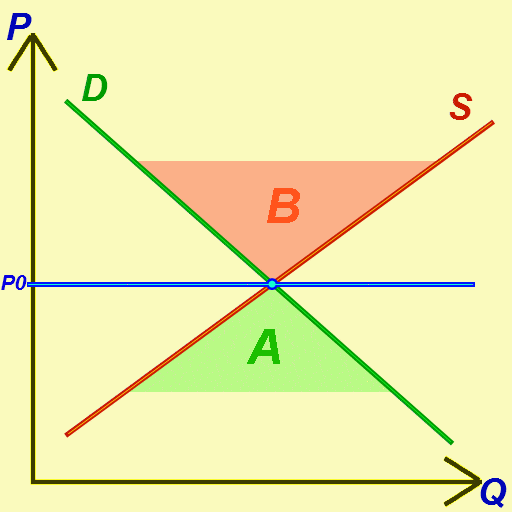{kind=link}
This chart effectively highlights the various basic implications of a simple supply and demand chart. The equilibrium point is where market clearing will theoretically occur.
Market Clearing Assumptions
A market clearing, by definition, is the economic assumption that the quantity supplied will consistently align with the quantity demanded. This definition requires a variety of assumptions which simplify the complexities of real markets to coincide with a more theoretical framework, most centrally the assumptions of perfect competition and Say's Law:
- Perfect competition is a market where the price determined for a given good or service is not affected by external forces or competition in a way that allows incumbents (companies) to attain market influence.
- Say's Law hinges on the concept that capital loses value over time, or that money is essentially perishable. The simplest way to view this law is interest rates. When you invest or owe money, that capital accrues interest due to the fact that there is an opportunity cost in not investing that money elsewhere. This opportunity cost creates the assumption that money will not go unused.
Combining these two assumptions, in a perfectly competitive market the amount of a product or service that is supplied at a given price will equate to the amount demanded, clearing the market of all goods/services at a given equilibrium point.
Theory and Practice
While this concept of market clearing resonates well in theory, the actual execution of markets is very rarely perfect. Markets demonstrate consistent shifts of supply and shifts of demand based on a wide spectrum of externalities. Even in static markets there is competitive consolidation that allows companies to charge differing price points than that of the equilibrium. The concept of monopolies provides a good example for this experience, as monopolies (see example) can control price and quantity simultaneously.
Another classic criticism of market clearing is the way in which the labor market functions. In the 1930's, during the worst depression recorded in the United States, the labor market did not clear the way economic theories of market clearing would assume it would. Instead, there seemed to be what John Maynard-Keynes (father of Keynesian Economics) called 'stickiness,' which preventing the market from normalizing. The importance of raising these concerns is the understanding that while the concept of market clearing, equilibrium and supply/demand charts are highly useful in understanding the basic functioning of markets, reality does not always conform with these models.
3.3.2. Impacts of Surpluses and Shortages on Market Equilibrium
The existence of surpluses or shortages in supply will result in disequilibrium, or a lack of balance between supply and demand levels.
Learning Objective
Infer the outcomes of departures from equilibrium using the model of supply and demand
Key Points
- Surpluses, or excess supply, essentially indicates that the quantity of a good or service exceeds the demand for that particular good at the price in which the producers would wish to sell (equilibrium level).
- In a perfectly competitive market, excess supply is equivalent to the quantity available in the market beyond the equilibrium point of intersection between supply and demand. This will result in a shift in market equilibrium towards lower price points.
- Shortage is a term used to indicate that the supply produced is below that of the quantity being demanded by the consumers. This disparity implies that the current market equilibrium at a given price is unfit for the current supply and demand relationship.
- In a perfectly competitive market, a shortage in supply will ultimately result in a shift in the equilibrium point, transitioning towards a higher price point due to the limited supply availability.
Key Terms
- Disequilibrium
- The loss of equilibrium or stability, especially due to an imbalance of forces.
- surplus
- That which remains when use or need is satisfied, or when a limit is reached.
- shortage
- Not enough or not sufficient for a given demand.
In the analysis of market equilibrium, specifically for pricing and volume determinations, a thorough understanding of the supply and demand inputs is critical to economics. Surpluses and shortages on the supply end can have substantial impacts on both the pricing of a specific product or service, alongside the overall quantity sold over time. Shifts such as these in the supply availability results in disequilibrium, or essentially a lack of balance between current supply and demand levels. Surpluses and shortages often result in market inefficiencies due to a shifting market equilibrium.
Surpluses
Surpluses, or excess supply, indicate that the quantity of a good or service exceeds the demand for that particular good at the price in which the producers would wish to sell (equilibrium level). This inefficiency is heavily correlated in circumstances where the price of a good is set too high, resulting in a diminished demand while the quantity available gains excess. There are substantial business risks inherently built into the concept of surpluses, as the general outcome will be either selling off inventory at sub-par prices or leftover unsold inventory. In both scenarios businesses will be forced to minimize margins or incorporate losses on that particular good. Governmental intervention can often create surplus as well, particularly through the utilization of a price floor if it is set at a price above the market equilibrium .
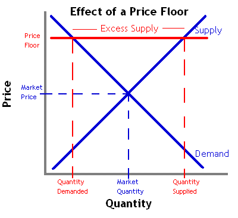{kind=link}
A price floor ensures a minimum price is charged for a specific good, often higher than that what the previous market equilibrium determined. This can result in a surplus.
In a perfectly competitive market, particularly pertaining to goods that are not perishable, excess supply is equivalent to the quantity available in the market beyond the equilibrium point of intersection between supply and demand. In this theoretical scenario the equilibrium point will transition towards a lower price point due to the increased supply, which will in turn motivate consumers to purchase a higher quantity as a result. This allows the economic model of the market to correct itself.
Shortages
Inversely, shortage is a term used to indicate that the supply produced is below that of the quantity being demanded by the consumers. This disparity implies that the current market equilibrium at a given price is unfit for the current supply and demand relationship, noting that the price is set too low. It could also indicate that the desired good has a low level of affordability by the general public, and can be a dangerous societal risk for necessary commodities. Indeed, Garrett Hardin emphasized that a shortage of supply could also be perceived as a 'longage' of demand, as the two are inversely related. From this vantage point shortages can be attributed to population growth as much as resource scarcity.
In a perfectly competitive market, a shortage in supply will ultimately result in a shift in the equilibrium point, transitioning towards a higher price point due to the limited supply availability. This will prioritize who receives the good or service based upon their willingness and ability to pay a premium for the specific item in demand, leveraging those along the demand curve who are at higher levels with higher ability and willingness to pay.
3.3.3. Changes in Demand and Supply and Impacts on Equilibrium
Alterations to overall supply or demand dictate the cross-section or equilibrium, ascertaining price and volume for a product or service.
Learning Objective
Illustrate how changes in supply or demand impact the market equilibrium
Key Points
- The interdependent relationship between the supply of a given product or service and the overall demand exercised by interested parties generates a theoretical equilibrium point, dictating the average market price and purchase volume relative to that price.
- Markets are in constant flux as demands and supplies are subjected to varying driving forces and influences. These shifts play a critical role, altering market equilibrium price points and volumes for products and services.
- Demand shifts can be caused by a wide variety of factors, but largely revolve around drivers of consumer behavior and circumstances.
- Supply shifts, similar to demand shifts, can ultimately be a result of a wide variety of externalities. Scarcity, or the lack of availability for a particular material, is a core driving force for overall supply.
- Due to a demand curve's sloping downward and a supply curve's sloping upwards, the curves will eventually cross at some point on any supply/demand chart. This point of equilibrium serves as a price and quantity tracking point.
Key Terms
- equilibrium
- A condition in which competing forces are in balance.
- scarcity
- An insufficiency or lack of availability; a shortage.
The interdependent relationship between the supply of a given product or service and the overall demand exercised by interested parties generates a theoretical equilibrium point, dictating the average market price and purchased volume relative to that price. In a static market it would be reasonable to assume that prices and volumes would remain fairly predictable and consistent relative to the population, but realistic markets are not static. Instead, markets are in constant flux as demands and supplies are subjected to varying driving forces and influences. These shifts play a critical role in altering market equilibrium price points and volumes for products and services, requiring constant vigilance and adaptation by providers and consumers. To better understand market variations, it is useful to examine how changes in supply and demand may occur, as well as the impacts and implications of these changes.
Demand Shifts
Demand shifts are defined by more or less of a given product or service being required at a fixed price, resulting in a shift of both price and quantity. As would be assumed, an increase in demand will shift price upwards and volume to the right, increasing the overall value of both metrics relative to the prior equilibrium point . Alternately, a decrease in demand will shift price downwards and volume to the left, decreasing both measurements to realign equilibrium with a reduced demand.
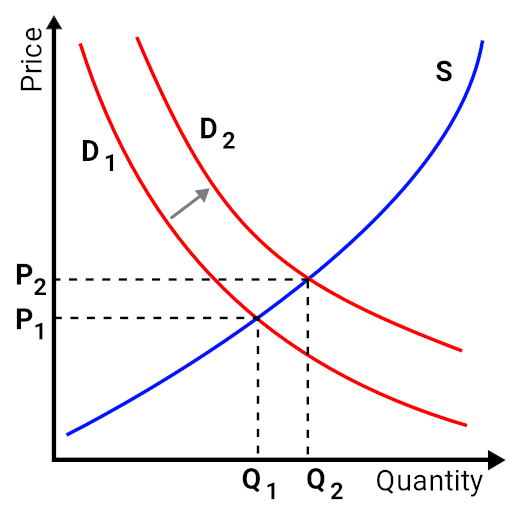{kind=link}
In this graph, the demand curve (red) has been affected by an increase in demand. This consequently increases price at a given volume.
Demand shifts can be caused by a wide variety of factors, but largely revolve around drivers of consumer behavior and circumstances. Demand shifts can therefore often be affected by economic factors such as average spending power per person in a given economy or overall average income. Demand can also be affected by cultural changes, demographic shifts, availability of substitutes, environmental factors and concerns (e.g. climate change), politics, and advances in science (e.g. declining demand for unhealthy foods). Demand is particularly malleable in respect to goods that are not necessities, thus are desired or not based upon sociological norms.
Supply Shifts
Supply shifts are defined by more or less of a particular product/service being available to fulfill a given demand, affecting the equilibrium point by shifting the supply curve upwards or downwards. A supply shift to the right, indicating more availability of the specified product or service, will create a lower price point and a higher volume assuming a fixed demand. Alternately, a decrease in supply with a consistent given demand will see an increase in price and a decrease in quantity. This is an intuitive theory underlining the fact that scarcity is relevant to the willingness to pay.
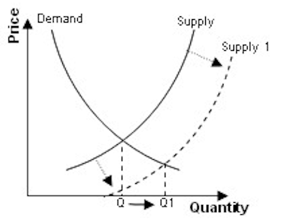{kind=link}
In this supply and demand chart we see an increase in the supply provided, shifting quantity to the right and price down. More of a given product, assuming the same demand, will result in lower price points at the equilibrium.
Supply shifts, similar to demand shifts, can ultimately be a result of a wide variety of external factors. As discussed above, scarcity plays a critical role in pricing and thus controlling supply is often even considered a strategic play by companies in specific industries (most notably industries like precious stones, rare earth metals, etc.). Supply shifts can also be a result of technological advances, over-utilization or consumption, globalization, supply-chain efficiency, and economics. For example, the discovery of a new gold deposit, acts as a shock to the supply of gold, shifting the curve right.
Equilibrium
In combining these two potential shifts, equilibrium is constantly subjected to both factors resulting in supply shifts and factors resulting in demand shifts. Due to the demand curve sloping downward and the supply curve sloping upwards, they inadvertently will cross at some given point on any supply/demand chart. This cross-section, or equilibrium, serves as a price and quantity tracking point based upon the consistent inputs of overall demand and supply availability. Any change in either factor will result in immediate impact on equilibrium, balancing the new demand or supply with a corresponding volume and appropriate average price point.
3.4. Government Intervention and Disequilibrium
3.4.1. Why Governments Intervene In Markets
Governments intervene in markets when they inefficiently allocate resources.
Learning Objective
Identify reasons why the government might choose to intervene in markets.
Key Points
- The government tries to combat market inequities through regulation, taxation, and subsidies.
- Governments may also intervene in markets to promote general economic fairness.
- Maximizing social welfare is one of the most common and best understood reasons for government intervention. Examples of this include breaking up monopolies and regulating negative externalities like pollution.
- Governments may sometimes intervene in markets to promote other goals, such as national unity and advancement.
Key Term
- inefficient market
- An economy where social optimality is not acheived; an economy where resources are not optimally allocated
Governments intervene in markets to address inefficiency. In an optimally efficient market, resources are perfectly allocated to those that need them in the amounts they need. In inefficient markets that is not the case; some may have too much of a resource while others do not have enough. Inefficiency can take many different forms. The government tries to combat these inequities through regulation, taxation, and subsidies. Most governments have any combination of four different objectives when they intervene in the market.
Maximizing Social Welfare
In an unregulated inefficient market, cartels and other types of organizations can wield monopolistic power, raising entry costs and limiting the development of infrastructure. Without regulation, businesses can produce negative externalities without consequence. This all leads to diminished resources, stifled innovation, and minimized trade and its corresponding benefits. Government intervention through regulation can directly address these issues.
Another example of intervention to promote social welfare involves public goods. Certain depletable goods, like public parks, aren't owned by an individual. This means that no price is assigned to the use of that good and everyone can use it. As a result, it is very easy for these assets to be depleted. Governments intervene to ensure those resources are not depleted.
Macro-Economic Factors
Governments also intervene to minimize the damage caused by naturally occurring economic events. Recessions and inflation are part of the natural business cycle but can have a devastating effect on citizens. In these cases, governments intervene through subsidies and manipulation of the money supply to minimize the harsh impact of economic forces on its constituents.
Socio-Economic Factors
Governments may also intervene in markets to promote general economic fairness . Government often try, through taxation and welfare programs, to reallocate financial resources from the wealthy to those that are most in need. Other examples of market intervention for socio-economic reasons include employment laws to protect certain segments of the population and the regulation of the manufacture of certain products to ensure the health and well-being of consumers.
Other Objectives
Governments can sometimes intervene in markets to promote other goals, such as national unity and advancement. Most people agree that governments should provide a military for the protection of its citizens, and this can be seen as a type of intervention. Growing a large and impressive military not only increases a country's security, but may also be a source of pride. Intervening in a way that promotes national unity and pride can be an extremely valuable goal for government officials.
3.4.2. Price Ceilings
A price ceiling is a price control that limits how high a price can be charged for a good or service.
Learning Objective
Define price ceilings.
Key Points
- For a price ceiling to be effective, it must be less than the free-market equilibrium price.
- The purpose of a price ceiling is to protect consumers of a certain good or service. By establishing a maximum price, a government wants to ensure the good is affordable for as many consumers as possible.
- Rent control is an example of a price ceiling.
Key Terms
- free-market equilibrium price
- The price established through competition such that the amount of goods or services sought by buyers is equal to the amount of goods or services produced by sellers
- Price ceiling
- An artificially set maximum price in a market.
A price ceiling is a price control that limits the maximum price that can be charged for a product or service. Generally ceilings are set by governments, although groups that manage exchanges can set ceilings as well. The purpose of a price ceiling is to protect consumers of a certain good or service. By establishing a minimum price, a government wants to ensure the good is affordable for as many consumers as possible .
Governments often impose price ceilings in times of war to ensure goods are available to as many people as possible.
An example of a price ceiling is rent control. These regulations require a more gradual increase in rent prices than what the market may demand. This regulation is meant to protect current tenants. Without rent control, there could be situations where the demand for housing in an area could cause rent prices to make a substantial jump. Unable to afford the new, significantly higher rent, a majority of the neighborhood's tenants may be forced to move out of the neighborhood. Rent controls limit the possibility of tenant displacement by minimizing the amount by which rent can be increased.
By definition, however, price ceilings disrupt the market. By setting a maximum price, any market in which the equilibrium price is above the price ceiling is inefficient. There will be excess demand because the price cannot increase enough to clear the excess.
For a price ceiling to be effective, it must be less than the free-market equilibrium price. This is the price established through competition such that the amount of goods or services sought by buyers is equal to the amount of goods or services produced by sellers. It is also the price that the market will naturally set for a given good or service. If the price ceiling is higher than what the market would already charge, the regulation would not be effective. As a result, a government will do significant research into the current market conditions for a good before setting a price ceiling.
3.4.3. Price Ceiling Impact on Market Outcome
A binding price ceiling will create a surplus of supply and will lead to a decrease in economic surplus.
Learning Objective
Explain how price controls lead to economic inefficiency
Key Points
- A price ceiling has an economic impact only if it is less than the free-market equilibrium price.
- An effective price ceiling will lower the price of a good, which decreases the producer surplus. The effective price ceiling will also decrease the price for consumers, but any benefit gained from that will be minimized by the decreased sales due to the drop in supply caused by the lower price.
- If a ceiling is to be imposed for a long period of time, a government may need to ration the good to ensure availability for the greatest number of consumers.
- Prolonged shortages caused by price ceilings can create black markets for that good.
Key Terms
- Price ceiling
- An artificially set maximum price in a market.
- black market
- trade that is in violation of restrictions, rationing or price controls
A price ceiling will only impact the market if the ceiling is set below the free-market equilibrium price. This is because a price ceiling above the equilibrium price will lead to the product being sold at the equilibrium price.If the ceiling is less than the economic price, the immediate result will be a supply shortage. As you can see from the chart below, a lower base price means less of a good will be produced. The quantity demanded will increase because more people will be willing to pay the lower price to get the good while producers will be willing to supply less, leading to a shortage.
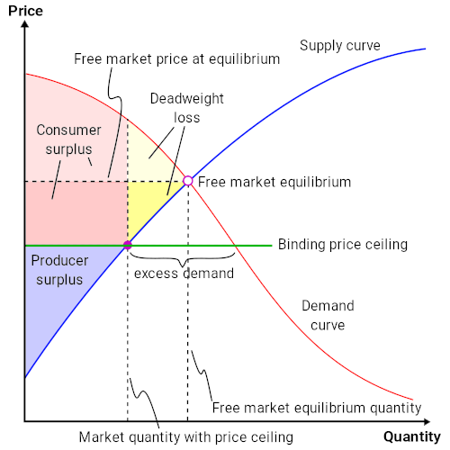{kind=link}
If a price ceiling is set below the free-market equilibrium price (as shown where the supply and demand curves intersect), the result will be a shortage of the good in the market. The dead weight loss, represented in yellow, is the minimum dead weight loss in such a scenario. If individuals who value the good most are not capable of purchasing it, there is a potential for a higher amount of dead weight loss.
A price ceiling will also lead to a more inefficient market and a decreased total economic surplus. Economic surplus, or total welfare, is the sum of consumer and producer surplus. Consumer surplus is the monetary gain obtained by consumers because they are able to purchase a product for a price that is less than the highest that they are willing pay. Producer surplus is the amount that producers benefit by selling at a market price that is higher than the least they would be willing to sell for. An effective price ceiling will lower the price of a good, which means that the the producer surplus will decrease. While the effective price ceiling will also decrease the price for consumers, any benefit gained from that will be minimized by decreased sales caused by decreased available supply for sale from producers due to the decrease in price. This translates into a net decrease total economic surplus, otherwise known as deadweight loss. This loss is signified in the attached chart as the yellow triangle.
Rationing
If a ceiling is to be imposed for a long period of time, a government may need to ration the good to ensure availability for the greatest number of consumers. One way the government may ration the good is to issue ticket to consumers. A government will only allow as much of good to be out in the marketplace as there are available tickets. To obtain the good, the consumer must present the ticket and the money to the vendor when making the purchase. This is generally considered a fair way to minimize the impact of a shortage caused by a ceiling, but is generally reserved for times of war or severe economic distress.
Black Market
Prolonged shortages caused by price ceilings can create black markets for that good. A black market is an underground network of producers that will sell consumers as much of a controlled good as they want, but at a price higher than the price ceiling. Black markets are generally illegal. However these markets provide higher profits for producers and more of a good for a consumers, so many are willing to take the risk of fines or imprisonment.
3.4.4. Price Floors
A binding price floor is a price control that limits how low a price can be charged for a product or service.
Learning Objective
Define Price Floors.
Key Points
- For a price floor to be affect the market, it must be greater than the free-market equilibrium price.
- Price floors above the equilibrium price will induce a surplus.
- The federal minimum wage is an example of a price floor.
Key Terms
- free-market equilibrium price
- The price established through competition such that the amount of goods or services sought by buyers is equal to the amount of goods or services produced by sellers
- price floor
- A mandated minimum price for a product in a market.
A price floor is a price control that limits how low a price can be charged for a product or service. Generally floors are set by governments, although groups that manage exchanges can set price floors as well. The purpose of a price floor is to protect producers of a certain good or service. By establishing a minimum price, a government seeks to promote the production of the good or service and ensure that the producers have sufficient resources to go about their work.
For a price floor to be effective, it must be greater than the free-market equilibrium price. This is the price established through competition such that the amount of goods or services sought by buyers is equal to the amount of goods or services produced by sellers. It is also the price that the market will naturally set for a given good or service. If the price floor is lower than what the market would already charge, the regulation would serve no purpose. Since the price is set artificially high, there will be a surplus: there will be a higher quantity supplied and a lower quantity demanded than in a free market . As a result, a government will generally do significant research into the current market conditions for a good or service before setting a price floor.
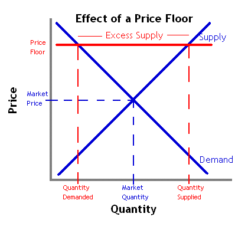{kind=link}
If a price floor is set above the equilibrium price, consumers will demand less and producers will supply more.
An example of a price floor is the federal minimum wage. In this case the suppliers are employees and employers are the consumers. The federal government has established a price that all employers must pay their workers. Obviously employers can pay more than that amount, but they cannot pay less. The purpose of setting this floor is to ensure that all employees make enough money from their jobs to provide for their basic needs.
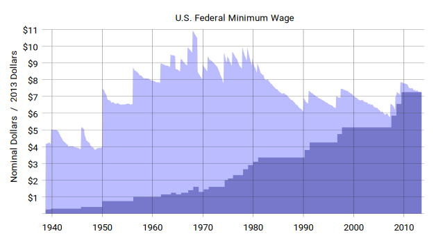{kind=link}
History of the federal minimum wage in real and nominal dollars. The federal minimum wage is one example of a price floor.
3.4.5. Price Floor Impact on Market Outcome
Binding price floors typically cause excess supply and decreased total economic surplus.
Learning Objective
Show how price floors contribute to market inefficiency
Key Points
- A price floor is economically consequential if it is greater than the free-market equilibrium price.
- Price floors lead to a surplus of the product.
- Supply surplusses created by price floors are generally added to producer's inventory or are purchased by governments.
- Consumer surplus is the gain obtained by consumers because they can obtain a product for a lower price than they would be willing to pay.
- Producer surplus is the benefit producers get by selling at a price higher than the lowest price they would sell for.
Key Terms
- free-market equilibrium price
- The price established through competition such that the amount of goods or services sought by buyers is equal to the amount of goods or services produced by sellers
- price floor
- A mandated minimum price for a product in a market.
A price floor will only impact the market if it is greater than the free-market equilibrium price. If the floor is greater than the economic price, the immediate result will be a supply surplus. As you can see from , a higher base price will lead to a higher quantity supplied. However, quantity demand will decrease because fewer people will be willing to pay the higher price. This will lead to a surplus of supply.
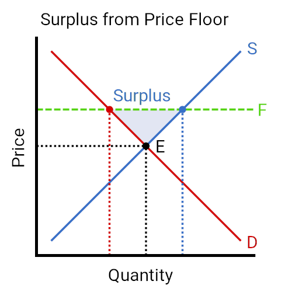{kind=link}
If a price floor is set above the free-market equilibrium price (as shown where the supply and demand curves intersect), the result will be a surplus of the good in the market.
A price floor will also lead to a more inefficient market and a decreased total economic surplus. Economic surplus, or total welfare, is the sum of consumer and producer surplus. Consumer surplus is the monetary gain obtained by consumers because they are able to purchase a product for a price that is less than the highest that they are willing pay. Producer surplus is the amount that producers benefit by selling at a market price that is higher than the least they would be willing to sell for. An effective price floor will raise the price of a good, which means that the the consumer surplus will decrease. While the effective price floor will also increase the price for producers, any benefit gained from that will be minimized by decreased sales caused by decreased demand from consumers due to the increase in price. This translates into a net decrease total economic surplus, otherwise known as deadweight loss.
Since well designed price floors create surpluses, the big issue is what to do with the excess supply. The first option is to let inventories grow and have the private producers bear the cost of storing it. The other option is for the government that set the price floor to purchase the excess supply and store it on its own. The government could then sell the surplus off at a loss in times of a food shortage.
3.4.6. Introduction to Deadweight Loss
Deadweight loss is the decrease in economic efficiency that occurs when a good or service is not priced at its pareto optimal level.
Learning Objective
Define deadweight loss
Key Points
- Deadweight loss can be caused by monopolies, binding price controls, taxes, subsidies, and externalities.
- When deadweight loss occurs, it comes at the expense of consumer surplus and/or producer surplus.
- Deadweight loss can be visually represented on supply and demand graphs as a figure known as Harberger's triangle.
Key Terms
- Pareto optimal
- Describing a situation in which the profit of one party cannot be increased without reducing the profit of another.
- deadweight loss
- A loss of economic efficiency that can occur when an equilibrium is not Pareto optimal.
Deadweight loss is the decrease in economic efficiency that occurs when a good or service is not priced and produced at its pareto optimal level. When output is at its pareto optimal point, the price, production, and consumption of a good cannot be altered for one person's benefit without making at least one other worse off. In a perfectly competitive market, products are priced at the pareto optimal point.
When deadweight loss occurs, it comes at the expense of either the consumer economic surplus or the producer's economic surplus. Consumer surplus is the gain that consumers receive when they are able to purchase a product for less than the price they are willing to pay; producer surplus is the benefit producers receive when the sell a product for more than they are willing to sell for. While price controls, subsidies and other forms of market intervention might increase consumer or producer surplus, economic theory states that any gain would be outweighed by the losses sustained by the other side. This net harm is what causes deadweight loss.
Deadweight loss can be visually represented on supply and demand graphs . Known as Harberger's triangle, the deadweight loss equals the area within the following three points:
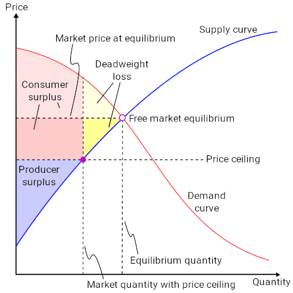{kind=link}
This chart illustrates the deadweight loss created when a price floor is instituted on the market for a good. The amount of deadweight loss is shown by the triangle highlighted in yellow. This area is known as Harberger's triangle.
- where the supply and demand curve intersect, otherwise known as the free market equilibrium;
- the point on the supply curve where the y-coordinate equals the non-pareto optimal price;
- the point on the demand curve where the y-coordinate equals the non-pareto optimal price.
Example - Price Ceilings and Deadweight Loss
The chart above shows what happens when a market has a binding price ceiling below the free market price. Without the price ceiling, the producer surplus on the chart would be everything to the left of the supply curve and below the horizontal line where y equals the free market equilibrium price. The consumer surplus would equal everything to the left of the demand curve and above the free market equilibrium price line.
With the price ceiling, instead of the producer's surplus going all the way to the pareto optimal price line, it only goes as high as the price ceiling.The consumer surplus extends down to the price ceiling, but it is limited on the right by Harberger's triangle. In this case, the reason for that limitation is due to quantity produced. The consumer would purchaser more of the product at the ceiling price, but the producers are unwilling to supply enough to meet that demand because it is not profitable. As a result all of the goods that might have been produced and consumed if the good was priced optimally are not, representing a net loss for society.
3.4.7. Arguments for and Against Government Price Controls
Many argue that price controls ensure resource availability, but most economists agree that these controls should be used sparingly.
Learning Objective
Justify the use of price controls when certain conditions are met
Key Points
- The main appeal of governmental imposed price controls is that they can ensure that citizens can purchase what they need in times of national economic hardship.
- Well designed price controls can ensure that basic staples are affordable, minimize the possibility of shortages, and prevent price gouging when shortages occur.
- By keeping prices artificially low through price ceilings, economists argue that demand is increased to a point where supply cannot keep up, leading to a shortage in the controlled product.
- Price floors often lead to surpluses, which can be just as detrimental as a shortage.
Key Terms
- Price control
- A law that sets the maximum or minimum amount for which a good may be sold.
- staple
- A basic or essential supply.
When unemployment is especially high or when there is a shortage of goods, it can be difficult for people to get what they need at an affordable price. The main appeal of government imposed price controls is that they can ensure that citizens can purchase what they need in times of national economic hardship .
During the depression the US government fixed prices on basic staples, such as food, to ensure people would be able to obtain their basic necessities.
Well designed price controls can do three things. First, these regulations can ensure that a basic staple, such as food, remains affordable to most of a country's citizens. Second, regulation can protect the producers of a good and ensure that they get sufficient revenue. This in turn limits the possibility of shortages, which benefits consumer. Finally, when shortages occur, price controls can prevent producers from gouging their customers on price.
Generally price controls are used in combination with other forms of government economic intervention, such as wage controls and other regulatory elements.
While price controls may appear to be a sound decision in theory, most economists believe these controls should be used sparingly. By keeping prices artificially low through price ceilings, consumers demand a higher quantity than producers are willing to supply, leading to a shortage in the controlled product. As Nobel Prize winner Milton Friedman said, "We economists do not know much, but we do know how to create a shortage. If you want to create a shortage of tomatoes, for example, just pass a law that retailers can't sell tomatoes for more than two cents per pound. Instantly you'll have a tomato shortage. "
Price floors often lead to surpluses, which can be just as detrimental as a shortage. One of the best known price floors in the minimum wage, which establishes a base line per hour wage that must be paid for work. As a result, employers hire fewer employees than they would if they could pay workers lower than the minimum wage. As a result the supply of workers is greater than the amount of work, which creates higher unemployment.
3.4.8. Taxes
Governments use its tax systems to raise funds for its programs and influence its citizens' economic actions.
Learning Objective
Categorize types of taxes into ad valorem taxes and excise taxes
Key Points
- A good tax system should be efficient, understandable and equitable. It should also allocate the costs of public services to those who use it, although that principle is hard to execute in practice.
- A direct tax is assessed on a person's income. Indirect taxes are assessed on an individual's participation in certain activities, such as making a purchase.
- The three types of tax systems are proportional, progressive, and regressive.
- Ad valorem and excise taxes are two types of indirect taxes.
Key Terms
- progressive
- Increasing in rate as the taxable amount increases
- regressive
- Whose rate decreases as the amount increases.
Taxes are the primary means for governments to raise funds for its programs and to pay off its debts. It can also be used to influence its citizens' financial behavior. . Choosing the right set of rules that have all of the elements of a good tax system can be a challenge for any government.
Taxes are a tool used by governments to raise money and influence their citizens' economic choices.
Elements of a Good Tax System
- Efficient: A tax system should raise the necessary revenues without unduly burdening the taxpayer.
- Understandable: A tax system should be easily understandable by the average citizen who has to pay the tax.
- Equitable:The tax burden should be distributed equitably among a nation's citizens. Generally, this means that those that are wealthier should pay more.
- Benefit Principle: Generally, the people who use public services should pay for them with higher taxes. However this principle is difficult to enforce in practice.
Two Types of Tax Systems
- Direct Taxation: A direct tax is assessed on the income of the taxpayer and is generally collected before the taxpayer collects his wages.
- Indirect Taxation: An indirect tax is an avoidable tax assessed on certain activities, such as purchasing goods or services. Examples of an indirect tax include sales tax and VAT (value added tax).
Types of Tax Structures
- Proportional Tax: Otherwise known as a flat tax, a flat tax rate is applied to all earned income regardless of how much the taxpayer earns. So a person making \$20,000 would pay the same rate as a person making \$120,000, but would pay significantly less in real dollars.
- Progressive Tax: The more a person earns, the higher the tax rate. Generally in a progressive tax system, income is divided into "brackets. " For example, assume a tax system divides earners into people two groups. Those who earn less than \$100,000 pay 10% and people who earn \$100,000 or more pay 20%. A person earning \$20,000 would have to pay 10%, or \$2,000, while a person who earns \$120,000 would have to pay 20%, or \$24,000.
- Regressive Tax:In a regressive tax system, poorer families pay a higher tax rate. Although a regressive tax system is never explicitly used, some claim a sales tax is a type of regressive tax. Since high income earners spend a lower proportion of their income on goods and services in comparison to low income earners, the rich tend to pay proportionally less sales tax.
Ad Valorem vs Excise Tax
Ad Valorem (or Value Added) and Excise Taxes are types of indirect taxes. Both are generally assessed on the sale of goods. These two taxes differ in three ways:
- An excise tax typically applies to a narrower range of products, such as gasoline, tobacco, and alcohol.
- An excise tax is typically heavier than an ad valorem, accounting for a higher fraction of a product's retail price.
- Excise taxes are typically a fixed fee per unit, meaning that the government earns its revenue based on volume sold. Ad valorem taxes are proportional to the price of the good, so the government earns revenue based on the value of the good or service being sold.
3.4.9. Taxation Impact on Economic Output
Tax incidence falls mostly upon the group that responds least to price, or has the most inelastic price-quantity curve.
Learning Objective
Analyze how changes in taxes affect the price of a good for sellers and buyers
Key Points
- When supply is inelastic and demand is elastic, the tax incidence falls on the producer.
- When supply is elastic and demand is inelastic, the tax incidence falls on the consumer.
- Tax incidence is the analysis of the effect a particular tax has on the two parties of a transaction; the producer that makes the good and the consumer that buys it.
- A marginal tax is an increase in a tax on a good that shifts the supply curve to the left, increases the consumer price, and decreases the price for the sellers.
Key Terms
- elastic
- Sensitive to changes in price.
- Tax incidence
- The effect a particular tax has on the two parties of a transaction.
Tax incidence is the effect a particular tax has on the two parties of a transaction; the producer that makes the good and the consumer that buys it. The burden of the tax is not dependent on whether the state collects the revenue from the producer or consumer, but on the price elasticity of supply and the price elasticity of demand. To understand how elasticities influence tax incidence, its important to consider the two extreme scenarios and how the tax burden is distributed between the two parties.
Inelastic supply, elastic demand
Because supply is inelastic, the firm will produce the same quantity no matter what the price. Because demand is elastic, the consumer is very sensitive to price. A small increase in price leads to a large drop in the quantity demanded. The imposition of the tax causes the market price to increase and the quantity demanded to decrease. Because consumption is elastic, the price consumers pay doesn't change very much. Because production is inelastic, the amount sold changes significantly. The producer is unable to pass the tax onto the consumer and the tax incidence falls on the producer .
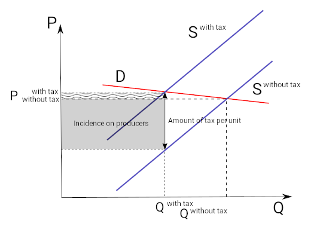{kind=link}
When supply is inelastic but demand is elastic, the majority of the tax is paid for by the consumer. Since quantity demanded drops significantly in this scenario, the producer is forced to sell less.
Elastic supply, inelastic demand
Consumption is inelastic, so the consumer will consume the same quantity no matter the price. The producer will be able to produce the same amount of the good, but will be able to increase the price by the amount of the tax. As a result, the entirety of the tax will be borne by the consumer.
Similarly elastic supply and demand
Generally consumers and producers are neither perfectly elastic or inelastic, so the tax burden is shared between the two parties in varying proportions. If one party is comparatively more inelastic than the other, they will pay the majority of the tax.
Increasing tax
If the government increases the tax on a good, that shifts the supply curve to the left, the consumer price increases, and sellers' price decreases. A tax increase does not affect the demand curve, nor does it make supply or demand more or less elastic. This potential increase in tax could be called marginal, because it is a tax in addition to existing levies.